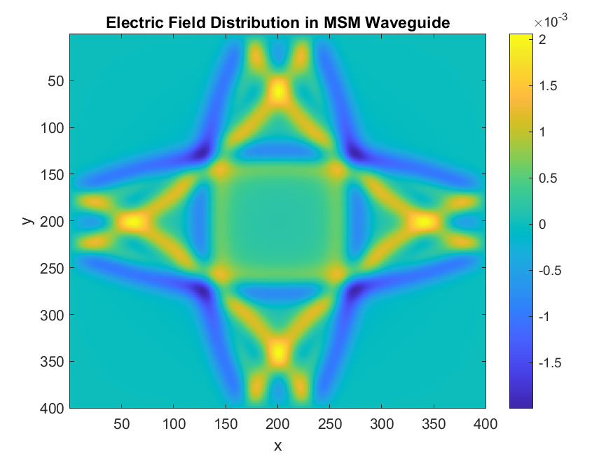
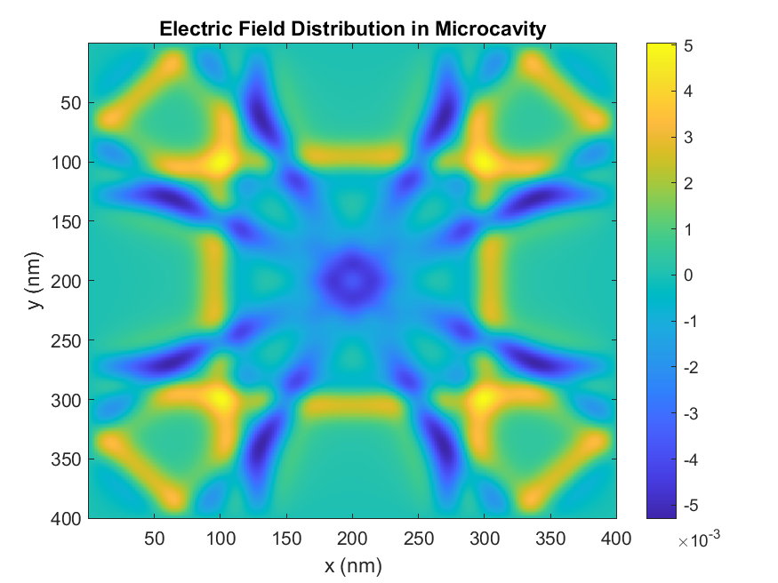
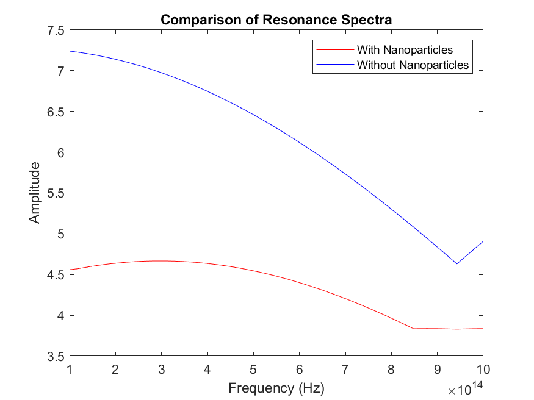

Open source · MATLAB
github.com/muhammadzareii/fdtd-active-plasmonicsOverview
Surface plasmon polaritons (SPPs) are electromagnetic modes bound to a metal-dielectric interface, with field amplitudes that decay exponentially into both media. They enable sub-diffraction-limit field confinement — concentrating optical energy into volumes far smaller than a free-space wavelength — making them attractive for nanoscale photonic devices. The fundamental limitation is propagation loss: the same free electrons that support the plasmon also absorb it.
Active plasmonics addresses this by embedding optical gain material in the dielectric surrounding the metal. Under pump illumination, stimulated emission from the gain medium compensates plasmonic absorption, extending propagation length and — in a resonant cavity — enabling plasmonic lasing (spaser).
This project implements a full semiclassical Maxwell-Bloch FDTD solver to model this interaction. The electromagnetic field (Maxwell's equations on a 2D Yee grid) is coupled to a quantum-mechanical two-level population model (Bloch equations) describing the gain medium. Gold is modelled with a Lorentz-Drude dispersion model that accurately captures its frequency-dependent permittivity across the visible spectrum.
Physical Model
Lorentz-Drude Model for Gold
Gold's permittivity cannot be captured by a simple Drude model alone because interband transitions near 2.5 eV contribute a resonant dispersion. The Lorentz-Drude model adds a Lorentzian oscillator term:
where ω_p is the plasma frequency, γ_D is the Drude damping, and the Lorentzian term captures interband effects. Parameters are fitted to Johnson & Christy experimental data. In FDTD this is implemented via an auxiliary differential equation (ADE) for the dispersive polarisation current.
Maxwell-Bloch Coupling
The gain medium is modelled as an ensemble of two-level atoms with transition frequency ω₀ and dipole moment μ. The Bloch equations govern population inversion N = N₂ − N₁ and polarisation P:
dN/dt = −(N − N_eq)/T₁ + (E/ℏ)·dP/dt
P appears as a source term in Maxwell's curl equations (∂D/∂t = ∇×H − ∂P/∂t). T₁ is the population relaxation time; T₂ is the dephasing time. N_eq is the equilibrium (pumped) inversion, which is the control parameter: negative N_eq means net gain.
Geometries Simulated
| Geometry | Description | Key Observable |
|---|---|---|
| MSM Waveguide | Metal–semiconductor–metal slab. Gain in semiconductor core. | Propagation length vs. pump level |
| Microcavity | Plasmonic resonator with gold boundaries. Gain medium filling. | Resonance amplitude, linewidth, lasing threshold |
| Nanoparticle-enhanced cavity | Gold nanoparticles in gain medium near resonator walls. | Field enhancement, ~60% amplitude increase |
Results



Implementation Notes
The solver uses a standard 2D Yee grid (Δx = Δy = 2 nm, Δt = CFL-stable at 0.95×ΔtCFL). The Lorentz-Drude ADE and Bloch equations are each integrated with a predictor-corrector scheme to maintain second-order temporal accuracy. Total-field/scattered-field (TFSF) source injection launches a broadband pulse; spectral analysis is performed via discrete Fourier transform computed on-the-fly during the time advance. Perfectly Matched Layer (PML) absorbing boundaries are applied on all four sides.